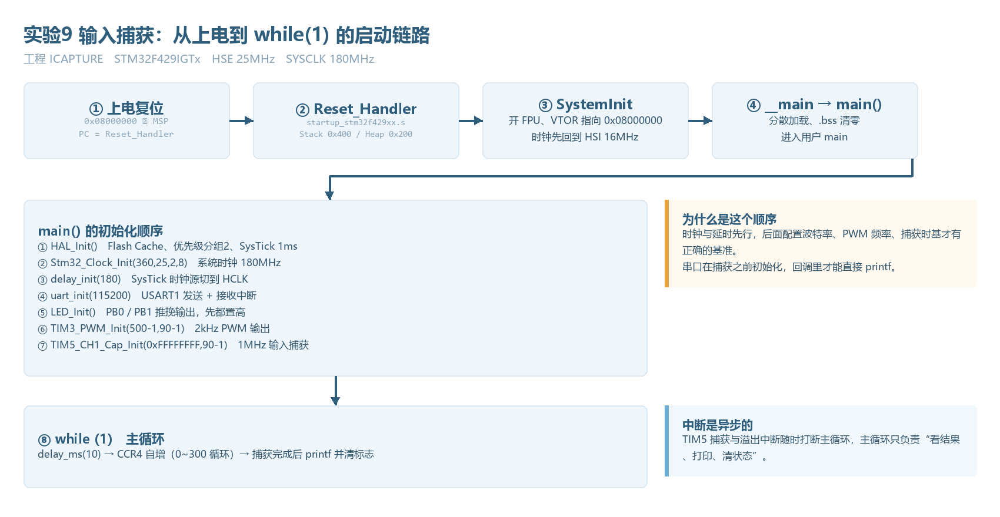
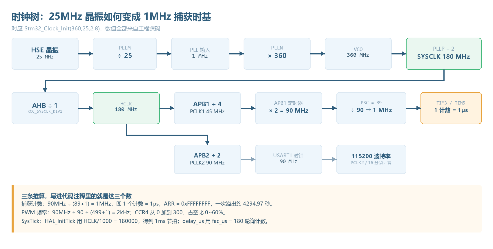
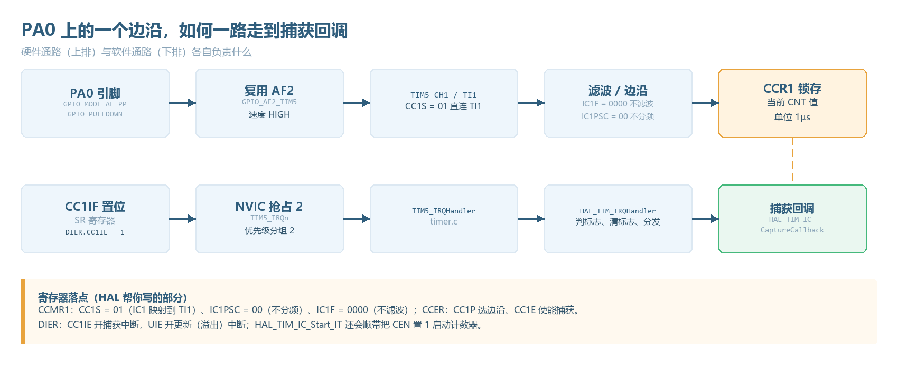
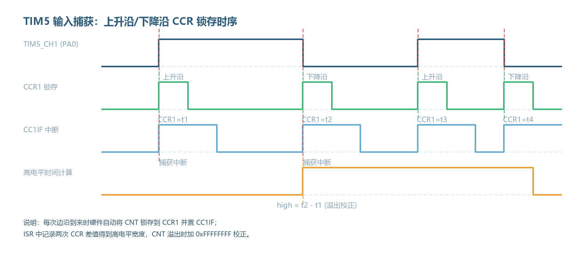
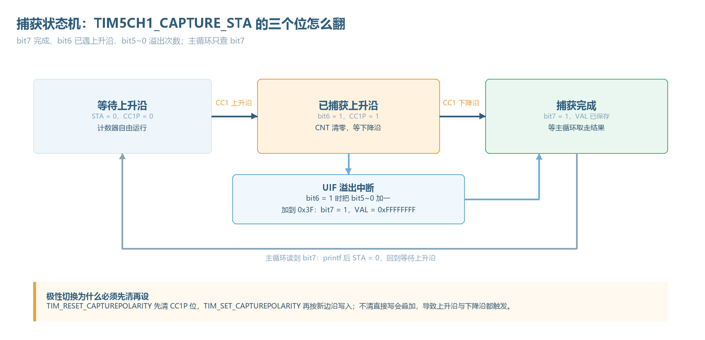
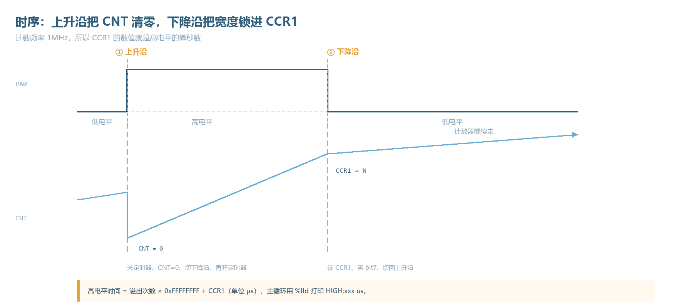

01 实验概述与硬件资源
本工程（Keil 工程名 ICAPTURE，器件 STM32F429IGTx）做两件事：一是用 TIM3_CH4 在 PB1 上输出 2kHz PWM，让板载 LED 亮度缓慢变化；二是用 TIM5_CH1 在 PA0 上捕获输入信号的高电平宽度，通过串口打印 HIGH:xxx us。前者是“输出”，后者是“输入”，合起来正好是定时器最常用的两种用法。
引脚与信号
| 引脚 | 配置 | 外设信号 | 在本实验中的作用 |
|---|---|---|---|
| PB0 | 推挽输出，上电置高 | GPIO 输出 | DS1 指示灯，低电平点亮，本实验保持熄灭 |
| PB1 | 复用推挽，上拉，高速 | AF2_TIM3 / TIM3_CH4 | PWM 输出，驱动 DS0 亮度渐变 |
| PA0 | 复用推挽，下拉，高速 | AF2_TIM5 / TIM5_CH1 | 捕获输入：被测信号的上升沿与下降沿 |
| PA9 / PA10 | 复用推挽，上拉 | AF7_USART1 TX / RX | 调试串口，115200 打印捕获结果 |
与实验8 的差别
| 对比项 | 实验8 PWM 输出 | 实验9 输入捕获 |
|---|---|---|
| 定时器 | TIM3 通道4（输出比较） | TIM3 通道4 + TIM5 通道1（输入捕获） |
| 数据方向 | MCU 输出波形到引脚 | 引脚波形被 MCU 采样、计时 |
| 中断 | 不使用 | TIM5 捕获中断 + 更新（溢出）中断 |
| 主循环 | 只扫占空比 | 扫占空比 + 查 bit7 + printf + 清状态 |
02 工程目录与文件分工
工程由正点原子 HAL 库模板裁剪而来。HALLIB 是 ST 的驱动库本体，本页只在需要解释某条寄存器操作时引用，不逐行展开。
| 文件 | 职责 | 本页关注点 |
|---|---|---|
CORE/startup_stm32f429xx.s | 向量表、栈/堆定义、复位入口 | 栈 0x400、堆 0x200，Reset_Handler 三行汇编 |
USER/system_stm32f4xx.c | SystemInit()、SystemCoreClock | 开 FPU、复位 RCC、设置 VTOR |
USER/main.c | 初始化顺序与主循环 | 全部 8 个启动步骤 |
USER/stm32f4xx_it.c | 异常处理与 SysTick_Handler | 只调用 HAL_IncTick() |
SYSTEM/sys/sys.c | Stm32_Clock_Init() 与汇编小工具 | PLL 参数、AHB/APB 分频 |
SYSTEM/delay/delay.c | 基于 SysTick 的 µs / ms 延时 | fac_us = 180 的来历 |
SYSTEM/usart/usart.c | USART1 初始化、fputc 重定向 | printf 为什么能直接输出 |
HARDWARE/LED/led.c | PB0/PB1 推挽输出 | 与 PWM 的引脚覆盖关系 |
HARDWARE/TIMER/timer.c | TIM3 PWM、TIM5 捕获、两个回调 | 本页核心，占一半篇幅 |
HARDWARE/KEY/key.c | 按键扫描 | 工程里有，但 main 未调用 |
工程宏定义只有两个：USE_HAL_DRIVER 与 STM32F429xx，写在 USER/ICAPTURE.uvprojx 的 C/C++ 选项卡里；包含路径覆盖 CORE、USER、HALLIB、SYSTEM、HARDWARE 五组目录。
main.c 的调用顺序，再去 timer.c 里找同名函数，最后才去 HALLIB 里确认 HAL 帮你写了哪些寄存器——顺序反了会在 600KB 的库里迷路。03 启动流程总览与 main

main 全文
int main(void) { long long temp=0; HAL_Init(); //初始化HAL库 Stm32_Clock_Init(360,25,2,8); //设置时钟,180Mhz delay_init(180); //初始化延时函数 uart_init(115200); //初始化USART LED_Init(); //初始化LED TIM3_PWM_Init(500-1,90-1); //90M/90=1M的计数频率，自动重装载为500，那么PWM频率为1M/500=2kHZ TIM5_CH1_Cap_Init(0XFFFFFFFF,90-1); //以1MHZ的频率计数 while(1) { delay_ms(10); TIM_SetTIM3Compare4(TIM_GetTIM3Capture4()+1); if(TIM_GetTIM3Capture4()==300)TIM_SetTIM3Compare4(0); if(TIM5CH1_CAPTURE_STA&0X80) //成功捕获到了一次高电平 { temp=TIM5CH1_CAPTURE_STA&0X3F; temp*=0XFFFFFFFF; //溢出时间总和 temp+=TIM5CH1_CAPTURE_VAL; //得到总的高电平时间 printf("HIGH:%lld us\r\n",temp);//打印总的高点平时间 TIM5CH1_CAPTURE_STA=0; //开启下一次捕获 } } }
为什么是这个顺序
| 步骤 | 做了什么 | 如果放到后面会怎样 |
|---|---|---|
| ① HAL_Init | Flash Cache、优先级分组、SysTick 1ms | 后面所有 HAL_Delay 与中断优先级都没有基准 |
| ② Stm32_Clock_Init | PLL 到 180MHz，APB1 45MHz / APB2 90MHz | 串口波特率、PWM 频率、捕获分辨率全部算错 |
| ③ delay_init | SysTick 时钟源切到 HCLK | delay_us 的倍乘数对不上，10ms 变几十 ms |
| ④ uart_init | USART1 8N1、115200 | 中断回调里 printf 无输出，现象“全黑” |
| ⑤ LED_Init | PB0/PB1 推挽输出并置高 | PB1 上电状态不确定，PWM 未启动时灯可能半亮 |
| ⑥ TIM3_PWM_Init | PB1 复用为 TIM3_CH4，启动 PWM | LED 无渐变 |
| ⑦ TIM5_CH1_Cap_Init | PA0 复用为 TIM5_CH1，开捕获与更新中断 | 没有捕获，主循环永远读不到 bit7 |
| ⑧ while(1) | 延时、扫占空比、查标志、打印 | — |
main() 里没有任何显式的 GPIO 时钟或 NVIC 配置：这些都在各外设的 MspInit() 回调里，由 HAL_xxx_Init() 自动调用。看启动流程时要顺着“初始化函数 → MspInit”这条暗线走。04 启动文件与向量表
startup_stm32f429xx.s 是汇编文件，它把栈、堆、向量表和复位入口都定义好了。Cortex-M4 复位时硬件自动从向量表第 0 项读 MSP、第 1 项读 PC，所以“第一条指令”其实不是代码，而是查表。
Stack_Size EQU 0x400 ; 1KB 栈 Heap_Size EQU 0x200 ; 512B 堆 __Vectors DCD __initial_sp ; 第 0 项：栈顶地址 DCD Reset_Handler ; 第 1 项：复位入口 DCD NMI_Handler DCD HardFault_Handler ... Reset_Handler PROC EXPORT Reset_Handler [WEAK] IMPORT SystemInit IMPORT __main LDR R0, =SystemInit BLX R0 ; 先跑 SystemInit LDR R0, =__main BX R0 ; 再交给 C 库启动代码 ENDP
| 项目 | 数值 | 说明 |
|---|---|---|
| 栈大小 | 0x400 = 1KB | 本工程中断嵌套浅、无递归，够用 |
| 堆大小 | 0x200 = 512B | 工程未调用 malloc，实际不消耗 |
| Flash 起始 | 0x08000000 | 向量表默认位置，1MB Flash |
| RAM | 0x20000000（192KB）+ 0x10000000（64KB） | 来自 uvprojx 的 IRAM/IRAM2 |
Reset_Handler | [WEAK] | 用户可重定义，本工程未重定义 |
__main 不是 main：它是 ARM 编译器运行库的入口，负责按分散加载文件把 .data 从 Flash 搬到 RAM、把 .bss 清零、初始化堆栈，最后才 BL main。因此 main() 里的全局变量一定已经是确定值。
Reset_Handler 之后的每一项都是弱符号实现（死循环）。本工程只重定义了 SysTick_Handler（在 stm32f4xx_it.c）和 TIM5_IRQHandler（在 timer.c），其余保持默认。05 SystemInit 与 HAL_Init
SystemInit：只做三件“打扫卫生”的事
void SystemInit(void) { /* FPU settings */ #if (__FPU_PRESENT == 1) && (__FPU_USED == 1) SCB->CPACR |= ((3UL << 10*2)|(3UL << 11*2)); /* 开 CP10/CP11 全权限 */ #endif /* Reset the RCC clock configuration to the default reset state */ RCC->CR |= (uint32_t)0x00000001; /* 打开 HSI */ RCC->CFGR = 0x00000000; /* 清空分频与时钟源选择 */ ... SCB->VTOR = FLASH_BASE | VECT_TAB_OFFSET; /* 向量表指向 0x08000000 */ }
这三件事依次是：开 FPU（long long 与浮点运算依赖它）、把时钟退回内部 HSI 16MHz、把向量表地址写进 SCB->VTOR。它不配置 PLL——真正的 180MHz 还在后面。
HAL_Init：时基、优先级分组、底层初始化
HAL_StatusTypeDef HAL_Init(void) { ... // 使能 Instruction Cache、Data Cache、Prefetch HAL_NVIC_SetPriorityGrouping(NVIC_PRIORITYGROUP_2);//中断优先级分组2 HAL_InitTick(TICK_INT_PRIORITY); // SysTick 1ms，优先级 0x0F HAL_MspInit(); // 本工程未重写，是空函数 return HAL_OK; }
本工程的 stm32f4xx_hal.c 被正点原子改过：优先级分组用的是 GROUP_2，而不是 ST 原版的 GROUP_4。
| 中断 | 源码里的设置 | 分组 2 编码后 |
|---|---|---|
| TIM5_IRQn | HAL_NVIC_SetPriority(TIM5_IRQn,2,0) | 抢占 2，子 0（最高） |
| USART1_IRQn | HAL_NVIC_SetPriority(USART1_IRQn,3,3) | 抢占 3，子 3 |
| SysTick | TICK_INT_PRIORITY = 0x0F | 只保留高 2 位 → 抢占 3，子 0 |
分组 2 意味着抢占优先级只有 0~3 四档、子优先级也只有 0~3 四档。所以 TIM5 的捕获中断（抢占 2）可以打断串口中断与 SysTick（抢占 3），但反过来不行。
TICK_INT_PRIORITY = 0x0F 会变成最低优先级——这会影响 HAL_Delay 在中断里的可用性。看代码时别把“分组”当成可有可无的一行。06 时钟树与 1µs 时基

源码里的四个参数
Stm32_Clock_Init(360,25,2,8); // plln=360, pllm=25, pllp=2, pllq=8 RCC_OscInitStructure.OscillatorType=RCC_OSCILLATORTYPE_HSE; RCC_OscInitStructure.PLL.PLLSource=RCC_PLLSOURCE_HSE; RCC_OscInitStructure.PLL.PLLM=pllm; // 25 RCC_OscInitStructure.PLL.PLLN=plln; // 360 RCC_OscInitStructure.PLL.PLLP=pllp; // 2 RCC_OscInitStructure.PLL.PLLQ=pllq; // 8 ret=HAL_PWREx_EnableOverDrive(); // 180MHz 必须开 Over-Drive RCC_ClkInitStructure.APB1CLKDivider=RCC_HCLK_DIV4; RCC_ClkInitStructure.APB2CLKDivider=RCC_HCLK_DIV2; ret=HAL_RCC_ClockConfig(&RCC_ClkInitStructure,FLASH_LATENCY_5);
逐级推算
| 节点 | 算式 | 结果 |
|---|---|---|
| PLL 输入 | 25MHz ÷ PLLM(25) | 1MHz |
| VCO | 1MHz × PLLN(360) | 360MHz |
| SYSCLK | 360MHz ÷ PLLP(2) | 180MHz |
| USB / SDIO / RNG | 360MHz ÷ PLLQ(8) | 45MHz |
| HCLK | 180MHz ÷ AHB(1) | 180MHz |
| PCLK1 | 180MHz ÷ 4 | 45MHz |
| PCLK2 | 180MHz ÷ 2 | 90MHz |
| TIM3 / TIM5 时钟 | PCLK1 × 2（APB 分频≠1 时自动倍频） | 90MHz |
| 捕获计数频率 | 90MHz ÷ (PSC+1) = 90MHz ÷ 90 | 1MHz → 1µs |
| PWM 频率 | 1MHz ÷ (ARR+1) = 1MHz ÷ 500 | 2kHz |
FLASH_LATENCY_5 对应 6 个 CPU 周期等待，这是 180MHz 下 3.3V 供电的必需值；HAL_PWREx_EnableOverDrive() 也是 F42x/F43x 跑到 180MHz 的前提，缺一个都会在 if(ret!=HAL_OK) while(1); 里卡死。
RCC->CFGR 的 APB 预分频位不为 0。07 延时与串口初始化
delay_init(180) 与 delay_us
void delay_init(u8 SYSCLK) { HAL_SYSTICK_CLKSourceConfig(SYSTICK_CLKSOURCE_HCLK);//SysTick频率为HCLK fac_us=SYSCLK; // fac_us = 180，即 1µs 需要 180 个 HCLK 计数 } void delay_us(u32 nus) { u32 ticks = nus*fac_us; // 需要的节拍数 u32 told=SysTick->VAL; // 递减计数器 while(1) { u32 tnow=SysTick->VAL; if(tnow!=told) { if(tnow<told) tcnt+=told-tnow; else tcnt+=reload-tnow+told; // 跨过重装点 told=tnow; if(tcnt>=ticks)break; } } }
SysTick 是 24 位递减计数器，本工程不开它的中断（SYSTEM_SUPPORT_OS = 0），delay_us 只是轮询 VAL 的变化量。delay_ms(10) 在非 OS 分支里就是循环 10 次 delay_us(1000)，所以主循环的节奏是10ms 一步。
uart_init(115200)
UART1_Handler.Init.BaudRate=bound; // 115200 UART1_Handler.Init.WordLength=UART_WORDLENGTH_8B; UART1_Handler.Init.StopBits=UART_STOPBITS_1; UART1_Handler.Init.Parity=UART_PARITY_NONE; UART1_Handler.Init.Mode=UART_MODE_TX_RX; HAL_UART_Init(&UART1_Handler); HAL_UART_Receive_IT(&UART1_Handler,(u8 *)aRxBuffer,RXBUFFERSIZE); // 每字节中断 // fputc 重定向：printf 直接写 USART1->DR int fputc(int ch, FILE *f) { while((USART1->SR&0X40)==0); // 等 TXE USART1->DR = (u8) ch; return ch; }
| 项目 | 设置 | 说明 |
|---|---|---|
| 引脚 | PA9 / PA10，GPIO_AF7_USART1 | 在 HAL_UART_MspInit 里配置 |
| 帧格式 | 8 数据位、1 停止位、无校验、无流控 | 与串口助手保持一致 |
| 接收 | EN_USART1_RX = 1，缓冲 1 字节 | 本实验只发不收，接收中断保留 |
| 中断优先级 | HAL_NVIC_SetPriority(USART1_IRQn,3,3) | 低于 TIM5 的抢占 2 |
| printf | #pragma import(__use_no_semihosting) | 不依赖 MicroLIB，也不用半主机 |
long long，格式串用 %lld。若换成 %d，高电平超过 32 位时结果会直接截断——这类“偶发打印错值”的问题，九成是格式串不匹配。08 LED 与 TIM3 PWM 初始化
void LED_Init(void) { __HAL_RCC_GPIOB_CLK_ENABLE(); GPIO_Initure.Pin=GPIO_PIN_0|GPIO_PIN_1; // PB0 / PB1 GPIO_Initure.Mode=GPIO_MODE_OUTPUT_PP; GPIO_Initure.Pull=GPIO_PULLUP; HAL_GPIO_Init(GPIOB,&GPIO_Initure); HAL_GPIO_WritePin(GPIOB,GPIO_PIN_0,GPIO_PIN_SET); // 置高，灯灭 HAL_GPIO_WritePin(GPIOB,GPIO_PIN_1,GPIO_PIN_SET); } void TIM3_PWM_Init(u16 arr,u16 psc) { TIM3_Handler.Instance=TIM3; TIM3_Handler.Init.Prescaler=psc; // 89 TIM3_Handler.Init.Period=arr; // 499 HAL_TIM_PWM_Init(&TIM3_Handler); TIM3_CH4Handler.OCMode=TIM_OCMODE_PWM1; TIM3_CH4Handler.Pulse=arr/2; // 初始 249，约 50% TIM3_CH4Handler.OCPolarity=TIM_OCPOLARITY_LOW; // 低电平有效 HAL_TIM_PWM_ConfigChannel(&TIM3_Handler,&TIM3_CH4Handler,TIM_CHANNEL_4); HAL_TIM_PWM_Start(&TIM3_Handler,TIM_CHANNEL_4); }
TIM3 的 MspInit 里，PB1 被重新配置为 GPIO_MODE_AF_PP + GPIO_AF2_TIM3，上拉、高速。至此 PB1 不再是普通 GPIO，而是定时器的输出引脚——所以 LED_Init 里对 PB1 的写操作只在 PWM 启动前有效（用来保证灯先熄灭）。
| 参数 | 值 | 结果 |
|---|---|---|
| 预分频 PSC | 89 | 90MHz / 90 = 1MHz 计数 |
| 自动重装 ARR | 499 | 周期 500 个计数 |
| PWM 频率 | 1MHz / 500 | 2kHz |
| 初始比较值 CCR4 | arr/2 = 249 | 接近 50% 占空比 |
| 主循环范围 | 0 → 300 → 0 | 占空比 0% → 60% → 0%，3 秒一轮 |
| 输出极性 | TIM_OCPOLARITY_LOW | CNT < CCR4 时输出低，LED 亮 |
主循环里 TIM_SetTIM3Compare4(TIM_GetTIM3Capture4()+1) 每 10ms 把 CCR4 加一，读到 300 就归零。之所以用 HAL_TIM_ReadCapturedValue() 读回 CCR4，是因为通道 4 工作在输出比较模式，CCR4 本身就是比较值寄存器，读它就是读当前占空比。
TIM_OCPOLARITY_HIGH，现象会反过来——调占空比之前先确认极性。09 TIM5 输入捕获初始化
void TIM5_CH1_Cap_Init(u32 arr,u16 psc) { TIM_IC_InitTypeDef TIM5_CH1Config; TIM5_Handler.Instance=TIM5; //通用定时器5 TIM5_Handler.Init.Prescaler=psc; //分频系数 TIM5_Handler.Init.CounterMode=TIM_COUNTERMODE_UP; //向上计数器 TIM5_Handler.Init.Period=arr; //自动装载值 TIM5_Handler.Init.ClockDivision=TIM_CLOCKDIVISION_DIV1; HAL_TIM_IC_Init(&TIM5_Handler);//初始化输入捕获时基参数 TIM5_CH1Config.ICPolarity=TIM_ICPOLARITY_RISING; //上升沿捕获 TIM5_CH1Config.ICSelection=TIM_ICSELECTION_DIRECTTI;//映射到TI1上 TIM5_CH1Config.ICPrescaler=TIM_ICPSC_DIV1; //配置输入分频，不分频 TIM5_CH1Config.ICFilter=0; //配置输入滤波器，不滤波 HAL_TIM_IC_ConfigChannel(&TIM5_Handler,&TIM5_CH1Config,TIM_CHANNEL_1); HAL_TIM_IC_Start_IT(&TIM5_Handler,TIM_CHANNEL_1); //开捕获通道1与捕获中断 __HAL_TIM_ENABLE_IT(&TIM5_Handler,TIM_IT_UPDATE); //使能更新中断 }
底层：时钟、引脚、NVIC
void HAL_TIM_IC_MspInit(TIM_HandleTypeDef *htim) { __HAL_RCC_TIM5_CLK_ENABLE(); //使能TIM5时钟 __HAL_RCC_GPIOA_CLK_ENABLE(); //开启GPIOA时钟 GPIO_Initure.Pin=GPIO_PIN_0; //PA0 GPIO_Initure.Mode=GPIO_MODE_AF_PP; GPIO_Initure.Pull=GPIO_PULLDOWN; //下拉 GPIO_Initure.Alternate=GPIO_AF2_TIM5; //PA0复用为TIM5通道1 HAL_GPIO_Init(GPIOA,&GPIO_Initure); HAL_NVIC_SetPriority(TIM5_IRQn,2,0); //抢占2，子优先级0 HAL_NVIC_EnableIRQ(TIM5_IRQn); }
| 参数 | 取值 | 含义 |
|---|---|---|
| Instance | TIM5 | 32 位通用定时器，ARR 可到 0xFFFFFFFF |
| PSC | 89 | 90MHz / 90 = 1MHz，1 个计数 = 1µs |
| ARR | 0xFFFFFFFF | 满量程计数，溢出周期约 4294.97 秒 |
| 计数模式 | TIM_COUNTERMODE_UP | 向上计数，捕获值就是时间差 |
| ICSelection | DIRECTTI | 通道 1 直连 TI1（PA0） |
| ICPolarity | RISING | 初始等上升沿，回调里会切到下降沿 |
| ICPrescaler | DIV1 | 每个边沿都捕获，不丢事件 |
| ICFilter | 0 | 不滤波，边沿抖动会直接进中断 |
| 中断 | CC1IE + UIE | 捕获中断 + 溢出计数，两路都要开 |
10 信号链路与寄存器落点

HAL 替你写了哪些位
| 寄存器 / 位 | 值 | 来源 | 作用 |
|---|---|---|---|
CCMR1[1:0] CC1S | 01 | ICSelection=DIRECTTI | IC1 映射到 TI1，通道变输入 |
CCMR1[3:2] IC1PSC | 00 | ICPrescaler=DIV1 | 每个边沿都触发捕获 |
CCMR1[7:4] IC1F | 0000 | ICFilter=0 | 不滤波，无采样延迟 |
CCER CC1P | 0 / 1 | ICPolarity | 0 = 上升沿，1 = 下降沿 |
CCER CC1E | 1 | HAL_TIM_IC_Start_IT | 使能通道 1 捕获 |
DIER CC1IE | 1 | HAL_TIM_IC_Start_IT | 捕获事件产生中断 |
DIER UIE | 1 | __HAL_TIM_ENABLE_IT | 溢出产生更新中断 |
SR CC1IF / UIF | 硬件置位 | 边沿 / 溢出 | 中断标志，HAL 在 ISR 里清 |
CR1 CEN | 1 | HAL_TIM_IC_Start_IT | 启动计数器 |
HAL_TIM_IC_Start_IT() 实际做了三件事：__HAL_TIM_ENABLE_IT(CC1)、TIM_CCxChannelCmd(ENABLE)、__HAL_TIM_ENABLE。所以捕获通道和计数器是一起打开的，谁也不用单独再启动一次。
数值怎么读出来
上升沿到来时，硬件把当前 CNT 复制进 CCR1 并置 CC1IF；但本工程在上升沿里做的是“清零 + 换极性”，所以上升沿那次捕获值被丢弃，真正要的是下降沿读到的 CCR1——它等于“从上升沿到下降沿经过了多少个 1µs”。
CCMR1 与 CCER 在起作用：滤波决定采不采噪声，极性决定数哪条边。两者都改了，捕获结果才会跟着变。
11 捕获中断：上升沿与下降沿
void TIM5_IRQHandler(void) { HAL_TIM_IRQHandler(&TIM5_Handler);//定时器共用处理函数 } void HAL_TIM_IC_CaptureCallback(TIM_HandleTypeDef *htim)//捕获中断发生时执行 { if((TIM5CH1_CAPTURE_STA&0X80)==0)//还未成功捕获 { if(TIM5CH1_CAPTURE_STA&0X40) //捕获到一个下降沿 { TIM5CH1_CAPTURE_STA|=0X80; //标记成功捕获到一次高电平脉宽 TIM5CH1_CAPTURE_VAL=HAL_TIM_ReadCapturedValue(&TIM5_Handler,TIM_CHANNEL_1); TIM_RESET_CAPTUREPOLARITY(&TIM5_Handler,TIM_CHANNEL_1);//先清原设置 TIM_SET_CAPTUREPOLARITY(&TIM5_Handler,TIM_CHANNEL_1,TIM_ICPOLARITY_RISING); }else //还未开始,第一次捕获上升沿 { TIM5CH1_CAPTURE_STA=0; //清空 TIM5CH1_CAPTURE_VAL=0; TIM5CH1_CAPTURE_STA|=0X40;//标记捕获到了上升沿 __HAL_TIM_DISABLE(&TIM5_Handler);//关闭定时器5 __HAL_TIM_SET_COUNTER(&TIM5_Handler,0); TIM_RESET_CAPTUREPOLARITY(&TIM5_Handler,TIM_CHANNEL_1); TIM_SET_CAPTUREPOLARITY(&TIM5_Handler,TIM_CHANNEL_1,TIM_ICPOLARITY_FALLING); __HAL_TIM_ENABLE(&TIM5_Handler);//使能定时器5 } } }

状态字三个区段
| 位 | 含义 | 谁置位 | 谁清除 |
|---|---|---|---|
| bit7 | 成功捕获一次完整高电平 | 下降沿回调 / 溢出到极限 | 主循环 printf 之后写 STA=0 |
| bit6 | 已经捕获到上升沿，正在等下降沿 | 第一次捕获回调 | 上升沿回调开头的 STA=0 |
| bit5~0 | 这段时间里计数器溢出了几次（最大 0x3F） | 更新中断里 STA++ | 同上 |
顺序很关键：上升沿回调里先 STA=0 把溢出计数清零，再 STA|=0x40 标记“已遇上升沿”，最后把计数器清零并切换极性。如果先切极性再清 CNT，切换期间多走的几个计数会被算进宽度里。
TIM_RESET_CAPTUREPOLARITY 清 CC1P，TIM_SET_CAPTUREPOLARITY 写新值；省掉前者会出现上升沿和下降沿都触发，捕获值随机跳变——这是本实验最经典的坑。12 溢出中断与时间合成
void HAL_TIM_PeriodElapsedCallback(TIM_HandleTypeDef *htim)//更新中断（溢出） { if((TIM5CH1_CAPTURE_STA&0X80)==0)//还未成功捕获 { if(TIM5CH1_CAPTURE_STA&0X40)//已经捕获到高电平了 { if((TIM5CH1_CAPTURE_STA&0X3F)==0X3F)//高电平太长了 { TIM5CH1_CAPTURE_STA|=0X80;//标记成功捕获了一次 TIM5CH1_CAPTURE_VAL=0XFFFFFFFF; }else TIM5CH1_CAPTURE_STA++; } } }
只有“已经遇到上升沿、还没完成”的那段时间里，溢出才需要计数。溢出上限设为 0x3F 是为了不把 bit6/bit7 冲掉：一旦 6 位全满，直接认定“信号太长”，把 VAL 填成满量程并标记完成，主循环照样能打印出一个明确的异常值。
| 项目 | 数值 | 推算 |
|---|---|---|
| 单次溢出周期 | 4294.967 s | 2³² µs ≈ 4294.97 秒（约 71.6 分钟） |
| 溢出计数上限 | 63 次 | STA & 0x3F 最大 0x3F |
| 可测最长高电平 | 约 76.4 小时 | (63+1) × 4294.97 s ≈ 274878 s |
| 实际用途 | 毫秒级脉宽 | 溢出计数在正常信号下通常为 0 |
主循环里的合成
temp = TIM5CH1_CAPTURE_STA & 0X3F; //溢出次数 temp *= 0XFFFFFFFF; //溢出时间总和 temp += TIM5CH1_CAPTURE_VAL; //加上最后一次的捕获值 printf("HIGH:%lld us\r\n", temp); TIM5CH1_CAPTURE_STA = 0; //开启下一次捕获
temp 声明为 long long，乘法在 64 位下完成，所以 63 × 0xFFFFFFFF 不会溢出。严格来说每个溢出周期是 2³² µs，源码乘的是 0xFFFFFFFF（少 1），每次溢出少算 1µs；在毫秒级测量里可以忽略，但知道这个差别有助于理解“为什么大数会有一点点偏差”。
temp 改成 u32，temp *= 0xFFFFFFFF 会直接溢出，打印结果变成随机值。%lld 和 long long 必须成对出现。13 主循环现象与交互演示

上电后能看到什么
- DS1 常灭：PB0 被置高，低电平点亮的 LED 不导通。
- DS0 呼吸：CCR4 每 10ms 加一，从 0 到 300 再回 0，3 秒一个来回；极性为低，所以越往后越亮。
- 串口输出：每完成一次捕获打印一行
HIGH:xxx us，随后状态字被清零，等待下一个上升沿。 - PA0 无信号时：下拉把引脚钉在低电平，没有上升沿，串口保持安静。
交互演示
下面的按钮复现 timer.c 与 main.c 里的四个分支，仅演示状态位与打印逻辑，不涉及真实硬件。
else 分支（清状态、置 bit6、切下降沿）；下降沿按钮对应 if(STA&0x40) 分支（存值、置 bit7、切回上升沿）；溢出按钮对应更新中断里的自增与饱和。14 全链路回顾与常见问题
一条完整的调用链
| 阶段 | 入口 | 关键动作 |
|---|---|---|
| 复位 | Reset_Handler | 取 MSP/PC，跳 SystemInit |
| 系统初始化 | SystemInit | 开 FPU、RCC 回 HSI、设 VTOR |
| C 运行时 | __main | 搬 .data、清 .bss、跳 main |
| HAL | HAL_Init | Cache、分组 2、SysTick 1ms |
| 时钟 | Stm32_Clock_Init | 180MHz，APB1 45 / APB2 90 |
| 时基 | delay_init(180) | fac_us = 180，SysTick 源切 HCLK |
| 串口 | uart_init(115200) | PA9/PA10 AF7，fputc 重定向 |
| 输出 | TIM3_PWM_Init | PB1 → AF2，2kHz PWM |
| 输入 | TIM5_CH1_Cap_Init | PA0 → AF2，1MHz，开 CC1IE+UIE |
| 异步 | TIM5_IRQHandler | 捕获回调切极性，溢出回调计数 |
| 主循环 | while(1) | 调占空比、合成时间、printf、清标志 |
现象 → 原因 → 排查
| 现象 | 可能原因 | 排查动作 |
|---|---|---|
| 串口完全没有输出 | 波特率不匹配 / PA9 未复用 / uart_init 被放到 printf 之后 | 先确认 115200-8N1，再量 PA9 是否有波形 |
| 一直不打印 HIGH | PA0 无上升沿（下拉）、NVIC 未使能、极性配错 | 示波器看 PA0；确认 TIM5_IRQn 已 HAL_NVIC_EnableIRQ |
打印 HIGH:0 us | 信号太窄，上升沿后立刻下降；或极性被重复设置 | 换低频信号源；检查 RESET/SET 极性是否成对 |
| 读数跳动几十 µs | 信号抖动，ICFilter = 0 未滤波 | 把 ICFilter 调大（如 0x3）或加大信号上升时间 |
| 只打印一次就没了 | 主循环没清 STA，回调被 bit7==1 挡住 | 确认 TIM5CH1_CAPTURE_STA=0; 在 printf 之后执行 |
| 值恒为 4294967295 | 溢出计数饱和，高电平超过 76 小时量程 | 基本可判定信号一直为高或接线错误 |
| LED 不呼吸 | PB1 仍是普通 GPIO，MSP 未执行 | 确认 HAL_TIM_PWM_Init 之前已使能 GPIOB/TIM3 时钟 |
三句话记住本实验
- 时钟先行：1MHz 计数来自 90MHz ÷ 90，90MHz 来自 APB1 的 45MHz 倍频。
- 边沿分工：上升沿清零并换到下降沿，下降沿读数并换回上升沿，极性切换必须先清后设。
- 状态传递：中断只改
STA/VAL，主循环只看 bit7，谁写谁清要分清，否则要么丢数据、要么重复打印。
USER/main.c、HARDWARE/TIMER/timer.c、SYSTEM/sys/sys.c、SYSTEM/delay/delay.c、USER/system_stm32f4xx.c 与 CORE/startup_stm32f429xx.s；HALLIB 中仅引用 HAL_Init、HAL_TIM_IC_Start_IT、TIM_Base_SetConfig 三处实现，用于解释寄存器行为。